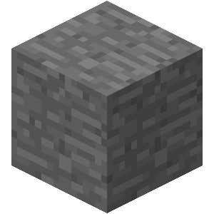
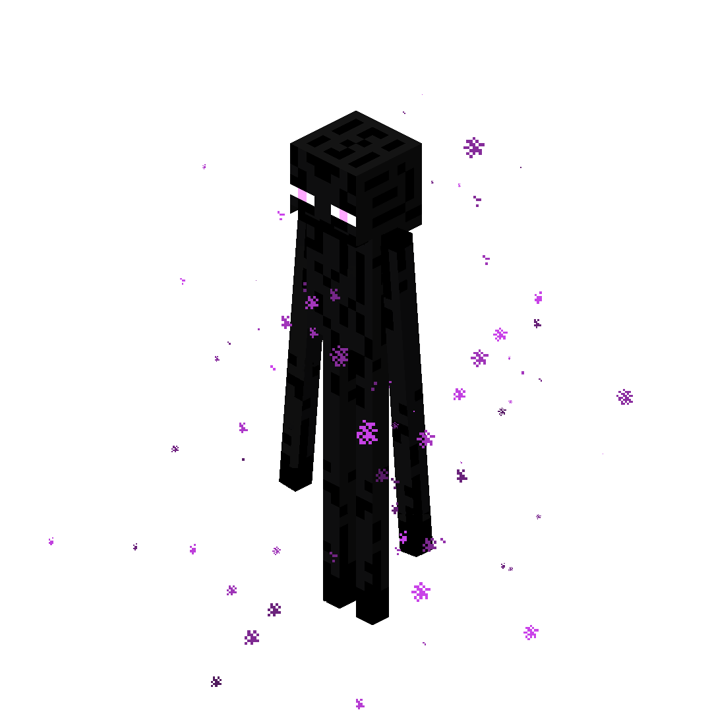

Bienvenu dans le changeur de fond
ici, vous pouvez choisir le fond que tu veux appliquer a la page d'accueil
Le navigateur se souviendera de votre choix.
-Pour bien débuter dans Minecraft, la première chose a faire est de ce fabriquer des outils basique,
pour se faire, il faut commencer par couper (à la main) du bois sur un arbre.
-Ensuite, ouvrez votre inventaire (avec la touche "e") transformez vos buches en planches.
-Grace a ces planches, vous pourrez fabriquer un établi qui vous permeterra de faire des outils.
-Enfin, fabriquez des baton (avec deux planches a la vertical) et avec votre établi, vous porrez fous faire une pioche en bois.
-Maintenant que vous avez une pioche, vous pouvez cassez de la pierre,
vous deverez récuperer au moins 13 blocs de pierre, soit assez pour faire une pioche en pierre, une épée(un baton et deux blocs a la vertical) et un four (huits blocs sur les contour de l'établi).

-La pioche en pierre vous permeterra de récuperer deux ressource trés importante, le charbon et le fer brut que vous devrez cuir dans un four avec le charbon pour produire du fer.
Le fer vous permeterra de faire des outil encors plus puissant ainsi qu'une armure pour vous proteger. pour l'instant, vous aurez besoins de :
3 fer pour une pioche
2 fer pour une épée
5 fer pour un casque
8 fer pour un plastron
7 fer pour des jambieres
et 4 fer pour des bottes soit un total de 29 lingots de fer minimum
(cela s'applique pour tout les materiaux)
Pour obtenir les lingots de fer, il faut cuire du fer brute pour cela, on utilise du charbon et un four. Un seul charbon peut faire cuire 8 item, il vous faudra donc au moins 4 charbon (4*8 = 32)
(vous pouvez également faire cuire des buches pour obtenir du charbon de bois qui fait également cuire 8 item, donc un seul charbon peut produire 8 charbon de bois)
Voici la recette pour fabriquer une armure en fer:
-Maintenant que vous avez du fer, vous pouvez recuperer du diamant, pour l'instant, il vous faut au minimum une pioche en diamant pour progresser mais il est préférable d'avoir une armure.
-Une fois que vous avez votre pioche en diamant, il faudra vous procurer de l'obsidienne (produit quand de l'eau rencontre une source de lave(de la lave qui ne coule pas)), il vous en faut au moins 10 mais il est plus simple d'en prendre 14.
-Avec cette obsidienne, vous allez construire un rectangle creux de 5 bloc de hauteur et 4 bloc de long. (l'interieur doit être un espace d'au moins deux blocs de long et de trois blocs de haut)
(les angles du portail sont optionels)
-Le nether est un lieu trés hostile avec de la lave et des monstres, votre objectif sera d'abattre deux type de monstres :
Les endermans: des monstre de trois blocs de haut ayant le pouvoir de se téleporter, il sont neutre tant que vous ne les attaquez pas ou que vous ne les regardez pas dans les yeux (ils craignent l'eau mais ici, cela ne vous servira pas).
Un bon moyens de les battres est d'utiliser seau de lave (un seau est constitué de trois lingots de fer en 'v') qui vous permeterra de leur faire des dégats sans risques qu'ils vous attaque.
Cela vous permettera d'obtenir des perles de l'end qui vous téleportent quand vous les utilisez.

Les blazes: des monstres volants trouvés dans les forteresses, ils vous craches des boules de feu, les battres vous donnera des batons de blaze que vous pouvez convertir en poudre de blaze.
La poudre de blaze se conbine aux perles de l'end pour faire des yeux de l'end qui se jette en dehors du nether pour vous donner la direction d'un portail de l'end.
-Une fois que vous avez trouvez un portail, remplissez le avec vos yeux de l'end et rentrez dedans, ce sera le moment d'affronter le boss final du jeu.